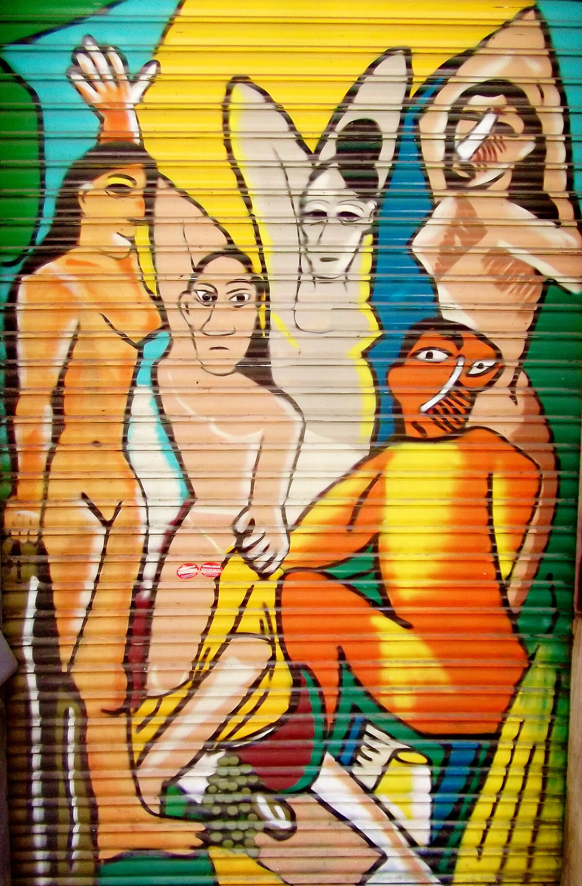
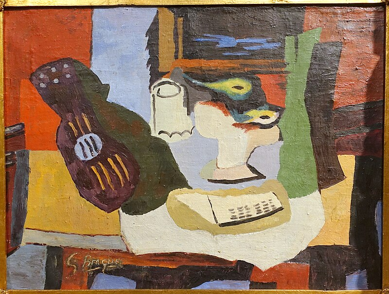
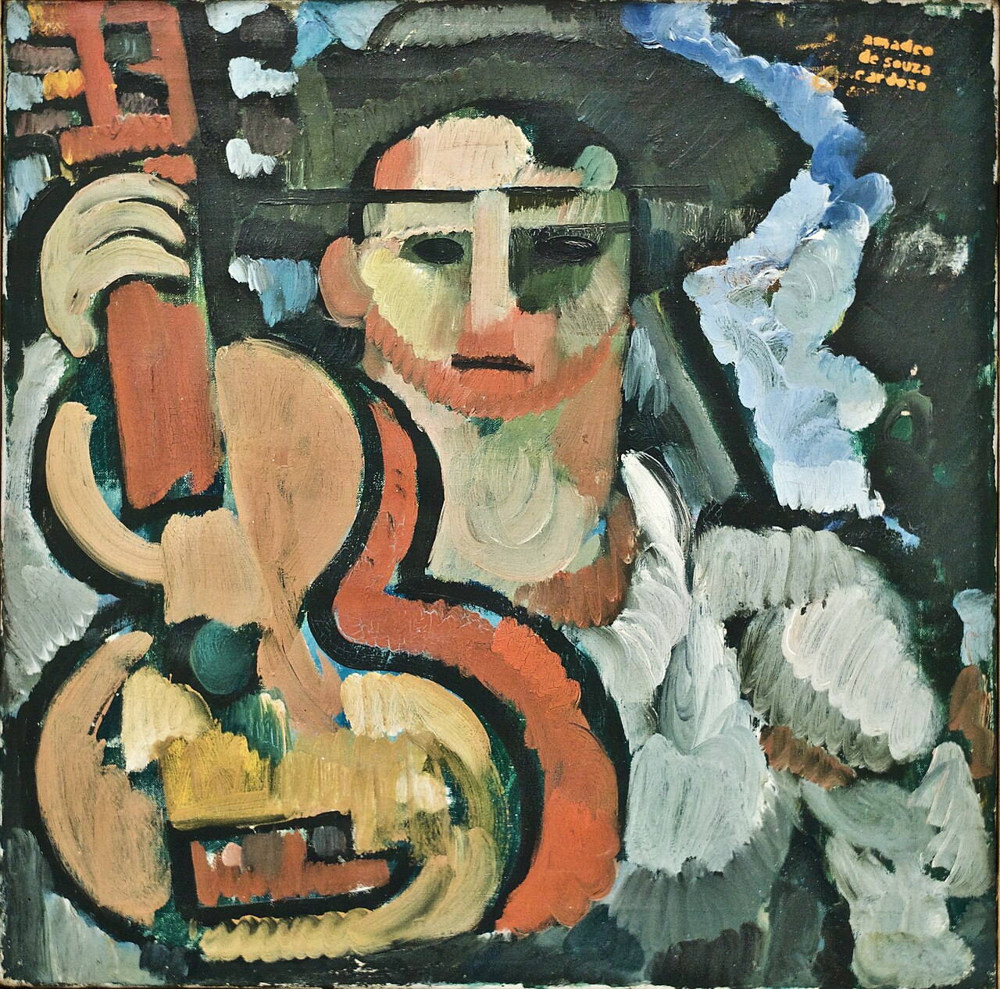
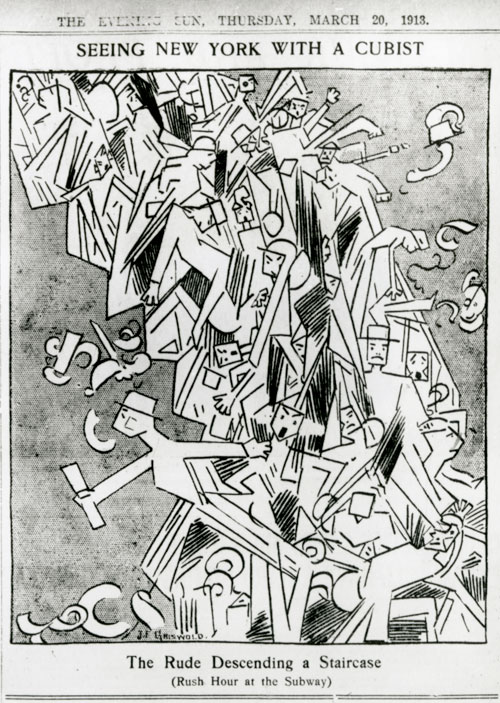

Meesterwerk: Les Demoiselles d'Avignon
Pablo Picasso, 1907

KUBISME (1907-1914)
Tijdsgeest Context
Politiek Perspectief
Het Kubisme ontstaat in een periode van radicale politieke omwentelingen. De Europese machtsverhoudingen stonden op springen, en de Eerste Wereldoorlog (1914-1918) zou de oude orde definitief vernietigen. De gebroken, gefragmenteerde vormen van het Kubisme weerspiegelen deze ontwrichting op meerdere niveaus.
De Eerste Wereldoorlog en collectief trauma — De kubistische esthetiek van broken forms en shattered reality bleek profetisch voor de komende apocalypse. Picasso's "Guitar and Glass" (1912) toont geometrische vereenvoudiging als een versplinterde realiteit, alsof het object door een explosie uit elkaar is gereten. Braque's "Violin and Candlestick" (1910) breekt objecten op in facetten die psychische desintegratie suggereren — een visuele metafoor voor hoe de oorlog het Europese bewustzijn zou verbrijzelen. Na de oorlog, in "Three Musicians" (1921), gebruikt Picasso maskers als symbolen van gefragmenteerde identiteit: de Harlekijn, de monnik, en de Pierrot vertegenwoordigen de rollen die mensen speelden om de traumatische realiteit te overleven.
Anti-naturalisme en subjectiviteit — Het Kubisme verwerpt bewust de natuurgetrouwe weergave en kiest voor een radicaal subjectieve benadering. In "Les Demoiselles d'Avignon" (1907) vervangt Picasso de zachte, idealiserende curven van de academische kunst door hoekige, agressieve vlakken. De gezichten van de vrouwen zijn geometrisch vervormd, bijna maskerachtig — dit is geen externe realiteit, maar een interne, psychologische waarheid. Braque's "Woman with a Mandolin" (1910) zet deze lijn voort: de gefacetteerde oppervlakte toont niet hoe de vrouw eruit ziet, maar hoe ze ervaren wordt, van binnenuit. "Still Life with Chair Caning" (1912) breekt met elke illusie van diepte en gebruikt platte geometrie als een bewuste afwijzing van het vis bedrog dat de academische kunst kenmerkte.
Razendsnelle modernisering en stedelijke vervreemding — De jaren 1907-1914 zagen een ongekende acceleratie van technologische en sociale verandering. De automobiel, de vliegtuig, de telefoon, de film — allemaal transformeerden ze de ervaring van tijd en ruimte. Het Kubisme vertaalt deze moderniteit in decentrale ruimte. In "The Portuguese" (1911) toont Picasso de kijker hetzelfde object vanuit meerdere gezichtspunten tegelijk, net zoals de moderne mens informatie van alle kanten tegelijk ontvangt. "The Man with a Guitar" (1911) toont gefragmenteerde figuren die lijden onder vervreemding — het individu is opgelost in de chaos van de moderne stad. Zelfs in het vroegere "Three Women" (1908) gebruiken de hoekige vormen een visuele taal van gebroken sociale harmonie, alsof de gemeenschap uit elkaar valt.
Feminisme en vrouwenrechten — De vroege 20e eeuw zag de opkomst van de vrouwenbewiging. In 1910 organiseerden Franse feministen hun eerste grote demonstratie; in 1914 brak de Eerste Wereldoorlog uit en gingen vrouwen werken in fabrieken. Het Kubisme behandelt vrouwelijke onderwerpen op een nieuwe, complexe manier. "Les Demoiselles d'Avignon" (1907) toont vrouwen als platte, hoekige vormen — geen seksobjecten voor de mannelijke blik, maar autonome wezens met een nieuwe identiteit. De geometrische abstractie van Braque's "Woman with a Mandolin" (1910) suggereert zelfbezinning en innerlijkheid: deze vrouw is geen passief model, maar een actief subject. Zelfs in "Portrait of Daniel-Henry Kahnweiler" (1910) — een mannenportret — toont de compositie een structurele autonomie die parallellen vertoont met de strijd voor artistieke en persoonlijke vrijheid.
Stijlelementen als politieke taal — De kubistische broken forms, geometric abstraction, multiple viewpoints, flat planes, en angular faceting zijn niet slechts esthetische keuzes, maar politieke statements. Ze verwerpen de autoriteit van de academische kunst, de hiërarchie van de Europese traditie, en de illusie van een stabiele, objectieve werkelijkheid. In een wereld die op het punt stond uit elkaar te vallen, bood het Kubisme een visuele taal die die fragmentatie erkende en omarmde.
Historisch Perspectief
De industriële revolutie heeft de tijd en ruimte fundamenteel veranderd. De fotografie, de cinematografie, de röntgenstraling - allemaal onthullen ze nieuwe manieren van kijken. Het Kubisme absorbeert deze technologische revolutie: net als een foto meerdere momenten kan vastleggen, toont het Kubisme meerdere perspectieven tegelijk.
De opkomst van de theoretische fysica - Einsteins relativiteitstheorie (1905, 1915) - verandert het begrip van ruimte en tijd. Hoewel Picasso en Braque waarschijnlijk niet direct door Einstein werden beïnvloed, ademt het Kubisme dezelfde sfeer van radicale heroriëntatie. Niets is meer stabiel, alles is relatief.
Literair Perspectief
De literaire modernisme parallelleert het Kubisme: Marcel Prousts "À la recherche du temps perdu" (1913) fragmenteert tijd en geheugen; James Joyce's experimenten met perspectief en taal; Guillaume Apollinaire's "Calligrammes" (1918) die woorden in visuele vormen rangschikken.
De poëzie van Stéphane Mallarmé, met zijn suggestieve leegtes en complexe structuur, ligt aan de basis van het Kubistische denken. Net als Mallarmé vervangt het Kubisme de directe representatie door een complex web van associaties en verwijzingen.
Filosofisch Perspectief
Het Kubisme is intellectueel en analytisch. Het verwerpt het sensualisme van het Impressionisme en het emotie van het Expressionisme. In plaats daarvan zoekt het naar de onderliggende structuur van de werkelijkheid - de "ding-an-sich" achter het verschijnsel.
Henri Bergsons filosofie van de "durée" (tijd als subjectieve ervaring) en de "mémoire pure" (het geheugen als accumulatie van momenten) resoneren met het Kubistische project. Net als Bergson analyseert het Kubisme de werkelijkheid in lagen en facetten.
Psychologisch Perspectief
Het Kubisme is in zekere zin anti-psychologisch: het verwerpt het idee van een stabiel, gecentreerd subject. In plaats daarvan toont het een gefragmenteerde blik, een subject dat de wereld vanuit meerdere hoeken tegelijk ervaart.
Dit sluit aan bij de opkomende psychologie van de perceptie: hoe zien we eigenlijk? Niet als een camera die alles in één keer vastlegt, maar als een actief proces van constructie en reconstructie. Het Kubisme maakt dit zichtbaar.
---
Stijlfiguren en Thema's
Kenmerkende Vormen
Het Kubisme kenmerkt zich door fragmentatie en meerdere perspectieven. Objecten worden gebroken in geometrische vlakken - cirkels, driehoeken, rechthoeken - en vanuit verschillende hoeken tegelijk getoond. Het is een analyse van de vorm, niet een imitatie van het uiterlijk.
Het "Analytisch Kubisme" (1909-1912) gebruikt een beperkt palet van bruinen en grijzen, en breekt objecten steeds verder af. Het "Synthetisch Kubisme" (1912-1914) introduceert kleur en collage (papier collé), en bouwt vormen op uit fragmenten.
Kleurenpalet
Het vroege Analytisch Kubisme is quasi-monochroom: ochres, bruinen, grijzen. Dit is geen armoede, maar een bewuste keuze - kleur zou afleiden van de structuur-analyse. Dit is kunst als wetenschap, als intellectuele onderneming.
Het Synthetisch Kubisme introduceert felle kleuren, geïnspireerd door het Fauvisme, maar gebruikt ze als vlakken, niet als modellering. Kleur wordt decoratief en structureel tegelijk.
Technieken
De collage is een cruciale innovatie: stukjes krant, behang, of gekleurd papier worden op het doek geplakt. Dit breekt de illusie van de schilderkunst en introduceert de "echte wereld" in het kunstwerk. Het is een van de belangrijkste doorbraken in de 20e-eeuwse kunst.
Centrale Thema's
1. Het stilleven - flessen, glazen, muziekinstrumenten
2. Het portret - geabstraheerde gezichten
3. Het landschap - fragmentarisch en gelaagd
4. De vrouw - als model en muze
---
De Tien Meest Invloedrijke Werken
1. "Les Demoiselles d'Avignon" (1907) — Pablo Picasso

Picasso's meesterwerk markeert het begin van het Kubisme. Het toont vijf naakte vrouwen in een bordeel, met gezichten die lijken op Afrikaanse maskers. Het schilderij was zo radicaal dat Picasso het jaren niet durfde te tonen. De vrouwen zijn vervormd: hun lichamen zijn gehoekt, hun gezichten zijn maskers, hun blikken zijn direct en uitdagend.
Tijdsgeest VertalingDit is de breuk met de Europese traditie. Picasso verwerpt de renaissance-perspectief, de anatomische precisie, de illusionistische diepte. In plaats daarvan zoekt hij naar een primitieve, directe kracht - geïnspireerd door Afrikaanse en Iberische kunst. Het schilderij reflecteert de toenemende interesse in "primitieve" culturen.
StijlanalyseDe compositie is schokkend: de vrouwen kijken de kijker aan, hun lichamen zijn gebroken in hoekige vlakken. Het kleurenpalet is beperkt: bruinen, grijzen, en enkele felle accenten. De ruimte is onmogelijk - er is geen vloer, geen diepte, alleen vlakken van kleur. Picasso's penseelvoering is ruw en agressief.
---
2. "Still Life" (1919) — Georges Braque

Dit stilleven uit Braques latere periode toont zijn rijpe stijl. Na de Eerste Wereldoorlog keerde Braque terug naar een meer decoratieve en kleurrijke stijl, terwijl hij de kubistische principes van fragmentatie en meerdere perspectieven behield. Het schilderij toont typische stilleven-elementen: fruit, een fles, en een tafelblad.
Tijdsgeest VertalingDit werk toont hoe het Kubisme zich heeft ontwikkeld van een radicale breuk met de traditie naar een verfijnde esthetiek. Braque heeft de ruimtelijke complexiteit van het analytisch kubisme behouden, maar combineert dit met een rijker kleurenpalet en een meer decoratieve compositie.
StijlanalyseDe compositie toont een tafel met objecten vanuit meerdere hoeken tegelijk. De kleuren zijn warm: bruinen, ochres, en groenen. De penseelvoering is vrijer dan in het vroege werk, met zichtbare texturen. De vormen zijn herkenbaar maar sterk gestileerd.
---
3. "Portrait of Daniel-Henry Kahnweiler" (1910) — Pablo Picasso

Dit portret van Picasso's belangrijkste dealer en mecenas is een hoogtepunt van het Analytisch Kubisme. Kahnweiler zit voorovergebogen, zijn handen gevouwen, maar zijn gezicht is gefragmenteerd en verspreid over het doek. Het is een portret zonder gezicht, of liever: een portret met vele gezichten tegelijk.
Tijdsgeest VertalingHet schilderij toont hoe het Kubisme de traditionele portretkunst transformeert. Niet de uiterlijke gelijkenis telt, maar de essentie van de persoon, gevangen in een web van relaties en perspectieven. Het is een visuele analyse van een menselijke persoonlijkheid.
StijlanalyseDe compositie is een ingewikkeld patroon van grijze en bruine vlakken. Het palet is extreem beperkt - bijna monochrome. De vormen zijn geometrisch maar fluïde, als een vloeistof die bevriest in verschillende posities tegelijk.
---
4. "Still Life" (1926) — Georges Braque

Dit stilleven uit Braques latere periode toont zijn rijpe stijl. Na de Eerste Wereldoorlog keerde Braque terug naar een meer decoratieve en kleurrijke stijl, terwijl hij de kubistische principes van fragmentatie en meerdere perspectieven behield. Het schilderij toont typische stilleven-elementen: fruit, een fles, en een tafelblad.
Tijdsgeest VertalingDit werk toont hoe het Kubisme zich heeft ontwikkeld van een radicale breuk met de traditie naar een verfijnde esthetiek. Braque heeft de ruimtelijke complexiteit van het analytisch kubisme behouden, maar combineert dit met een rijker kleurenpalet en een meer decoratieve compositie.
StijlanalyseDe compositie toont een tafel met objecten vanuit meerdere hoeken tegelijk. De kleuren zijn warm: bruinen, ochres, en groenen. De penseelvoering is vrijer dan in het vroege werk, met zichtbare texturen. De vormen zijn herkenbaar maar sterk gestileerd.
---
5. "La Tasse" (The Cup) (1912) — Georges Braque

Dit kleine maar krachtige werk toont een kopje en schotel, een typisch kubistisch stilleven-motief. Geschilderd in het hart van het Analytisch Kubisme (1912), toont het de extreme fragmentatie en de quasi-monochrome palet die kenmerkend zijn voor deze periode. Het werk demonstreert Braque's meesterschap in het creëren van ruimtelijke diepte zonder traditioneel perspectief.
Tijdsgeest VertalingDit werk illustreert het intellectuele karakter van het Analytisch Kubisme. Door een alledaags object (een kopje) te analyseren en te breken in zijn componenten, toont Braque hoe de waarneming werkt: we zien niet één moment, maar een accumulatie van verschillende blikken. Het is een wetenschappelijke benadering van de schilderkunst.
StijlanalyseDe compositie is centraal gericht op het kopje, dat is opgelost in een web van grijze, bruine en beige vlakken. De kleuren zijn terughoudend en aardachtig. De vormen overlappen elkaar, waardoor meerdere perspectieven tegelijk zichtbaar zijn. De penseelstreken zijn subtiel en gecontroleerd.
---
6. "Still Life with Chair Caning" (1912) — Pablo Picasso

Picasso's "Still Life with Chair Caning" is een van de eerste collage-schilderijen in de moderne kunst. Het toont een stilleven op een ronde tafel, met een stukje gedrukt olieverf (dat eruitziet als touw) dat om het canvas is gewikkeld. Het werk breekt met elke illusie van diepte en introduceert de "echte wereld" in het kunstwerk.
Tijdsgeest VertalingDit schilderij is een revolutie in de kunstgeschiedenis. Door collage te gebruiken, verwerpt Picasso de traditionele schilderkunstige technieken en introduceert hij nieuwe materialen en methoden. Het werk weerspiegelt de moderne tijd: niet alleen verf op doek, maar een mix van materialen die de werkelijkheid nabootsen.
StijlanalyseDe compositie is een mengeling van geschilderde en geplakte elementen. Het kleurenpalet is beperkt tot bruinen, grijzen en zwarte lijnen. Het stukje touw rondom het canvas is een realistisch element dat de grens tussen kunst en werkelijkheid vervaagt.
---
7. "Girl with a Mandolin" (1910) — Pablo Picasso

Dit vroege kubistische portret toont een vrouw met een mandoline, maar haar lichaam is gefragmenteerd in geometrische vlakken. Het is een hoogtepunt van het Analytisch Kubisme, waarbij Picasso de menselijke figuur ontleedt in abstracte vormen. Het werk is geschilderd in Parijs tijdens de formative jaren van het Kubisme.
Tijdsgeest VertalingDit schilderij toont de overgang van figuratie naar abstractie in het Kubisme. De vrouw is niet langer een herkenbaar individu, maar een verzameling geometrische vormen die vanuit meerdere perspectieven tegelijk worden weergegeven. Het weerspiegelt de moderne zoektocht naar nieuwe manieren van kijken en waarnemen.
StijlanalyseDe compositie is een ingewikkeld patroon van geometrische vlakken in grijze en bruine tinten. Het palet is extreem beperkt, typisch voor het Analytisch Kubisme. De vormen overlappen elkaar, waardoor meerdere gezichtspunten tegelijk zichtbaar zijn. De penseelvoering is subtiel en analytisch.
---
8. "Portrait of Pablo Picasso" (1912) — Juan Gris

Juan Gris was de derde belangrijke kubist (na Picasso en Braque). Dit portret van Picasso toont zijn karakteristieke stijl: strakkere geometrie, felle kleuren, en een meer systematische aanpak dan Picasso's intuïtieve methode.
Tijdsgeest VertalingGris bracht orde in het kubistische chaos. Waar Picasso en Braque intuïtief werkten, ontwikkelde Gris een methode. Dit portret toont de kunstenaar als denker, omringd door zijn attributen (palet, penseel, krant).
StijlanalyseDe compositie is verticaler en symmetrischer dan Picasso's werk. De kleuren zijn feller: blauw, groen, bruin. De vormen zijn duidelijker gescheiden, met zwarte lijnen die als raster werken.
---
9. "The City" (1919) — Fernand Léger

Léger ontwikkelde zijn eigen variant van het Kubisme: "Tubisme", met cilindrische vormen en felle primaire kleuren. "The City" is zijn meesterwerk: een panoramisch beeld van het moderne stadsleven, fragmentarisch en dynamisch.
Tijdsgeest VertalingDit schilderij viert de moderne stad - niet als bron van alienatie (zoals bij de Expressionisten), maar als een dynamisch, machineachtig organisme. Het is een optimistische visie van de moderniteit, na de gruwelen van de oorlog.
StijlanalyseDe compositie is een complexe overlapping van horizontale en verticale lijnen, met ronde vormen die als machines lijken te draaien. De kleuren zijn helder: rood, blauw, geel, zwart, wit - de kleuren van de moderne reclame en de industriële esthetiek.
---
10. "Three Musicians" (1921) — Pablo Picasso

Picasso's laatste grootse kubistische werk, geschilderd in Fontainebleau. Het toont drie muzikanten (een Harlekijn, een monnik, en een Pierrot) die samen spelen. Het is een synthese van alle kubistische technieken, maar met een nieuwe monumentale helderheid.
Tijdsgeest VertalingDit schilderij toont de rijpheid van het Kubisme. Na meer dan tien jaar experimenteren heeft Picasso een taal gevonden die zowel abstract als betekenisvol is. De muzikanten verwijzen naar de commedia dell'arte, maar ook naar de vriendschap tussen kunstenaars.
StijlanalyseDe compositie is horizontal en symmetrisch, met drie duidelijk gescheiden figuren die toch een eenheid vormen. De kleuren zijn feller dan in het analytische werk: blauw, oranje, wit. De vormen zijn vlakker, bijna als een mozaïek.